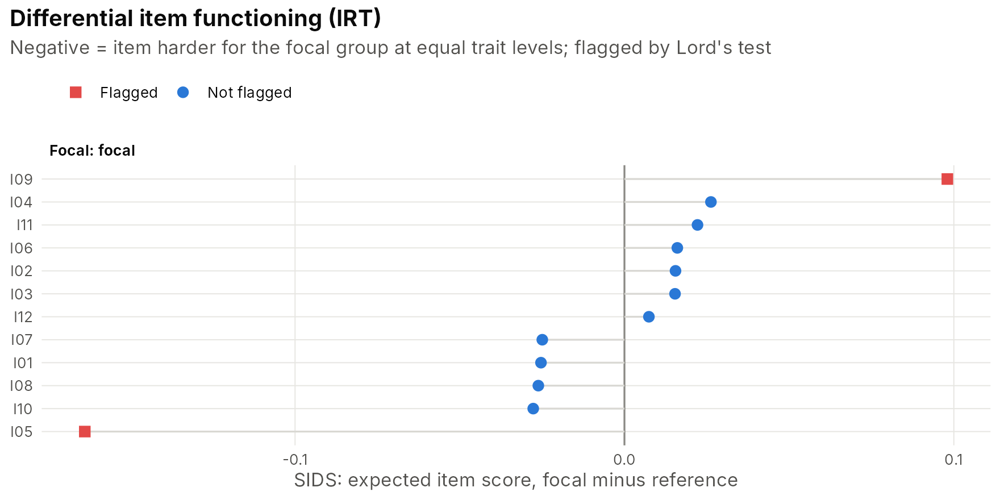
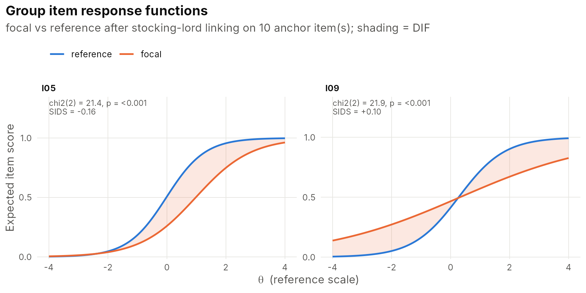

Screening for DIF with observed-score methods
dif_test() gives the classical procedures:
Mantel-Haenszel with the ETS A/B/C classes (Holland & Thayer, 1988),
and logistic or ordinal logistic regression with the Jodoin and Gierl
(2001) effect-size classes.
n <- 1200
base <- sim_irt(10, 12, "2pl"); tr <- attr(base, "truth")
tr$a[c(5, 9)] <- c(1.3, 1.4); tr$b[c(5, 9), 1] <- c(0, 0.3) # two well-measured items to study
group <- rep(c("reference", "focal"), n / 2)
theta <- rnorm(n) - 0.4 * (group == "focal") # the groups differ in ability (impact)
dat <- sim_irt(n, a = tr$a, b = tr$b, model = "2pl", theta = matrix(theta))
f <- group == "focal"
dat$I05[f] <- rbinom(sum(f), 1, plogis(tr$a[5] * (theta[f] - tr$b[5] - 0.9))) # uniform DIF
dat$I09[f] <- rbinom(sum(f), 1, plogis(0.4 * (theta[f] - tr$b[9]))) # non-uniform DIF
fit <- irt_fit(dat, "2pl")
dif_test(fit, group, method = "lr")
#> DIF analysis (lr): 1 item(s) with B/C-level DIF
#> item uniform_chisq uniform_p nonuniform_chisq nonuniform_p statistic df p
#> I01 0.359 0.549 1.109 0.292 1.467 2 0.480
#> I02 1.648 0.199 0.006 0.938 1.654 2 0.437
#> I03 1.958 0.162 2.804 0.094 4.762 2 0.092
#> I04 4.752 0.029 0.153 0.696 4.905 2 0.086
#> I05 49.566 0.000 1.863 0.172 51.430 2 0.000
#> I06 3.379 0.066 0.729 0.393 4.108 2 0.128
#> I07 0.116 0.733 0.003 0.955 0.120 2 0.942
#> I08 0.424 0.515 0.517 0.472 0.941 2 0.625
#> I09 9.932 0.002 15.200 0.000 25.132 2 0.000
#> I10 0.043 0.837 1.049 0.306 1.092 2 0.579
#> I11 1.324 0.250 0.001 0.974 1.325 2 0.516
#> I12 0.842 0.359 0.202 0.653 1.044 2 0.593
#> delta_R2 class p_adj
#> 0.001 A 0.681
#> 0.002 A 0.681
#> 0.004 A 0.277
#> 0.006 A 0.277
#> 0.038 B 0.000
#> 0.003 A 0.308
#> 0.000 A 0.942
#> 0.001 A 0.681
#> 0.023 A 0.000
#> 0.001 A 0.681
#> 0.001 A 0.681
#> 0.001 A 0.681IRT-based DIF with linking and purification
dif_irt() calibrates each group separately, links the
focal group to the reference scale by Stocking-Lord on anchor items, and
compares the item parameters with Lord’s (1980) Wald test. Items flagged
at each round are removed from the anchor set until it is stable
(Candell & Drasgow, 1988). Effect sizes include Raju’s (1988) signed
and unsigned areas and Meade’s (2010) SIDS/UIDS, which are expected
score differences weighted by the focal group’s ability distribution and
so are in score points. Their sum is the differential test functioning
(DTF).
res <- dif_irt(fit, group, reference = "reference")
res
#> IRT-based DIF (Lord's Wald test, Raju areas) | reference group: reference
#> focal: 10 anchor(s); theta_ref = 0.935 * theta_focal + -0.467; DTF = -0.067 score points
#> 2 item(s) flagged
#>
#> item focal chisq df p p_adj delta_b signed_area unsigned_area sids
#> I01 focal 0.732 2 0.694 0.874 0.129 0.129 0.129 -0.025
#> I02 focal 0.466 2 0.792 0.874 -0.002 -0.012 0.126 0.016
#> I03 focal 1.278 2 0.528 0.874 -0.156 -0.154 0.314 0.015
#> I04 focal 1.702 2 0.427 0.874 -0.063 -0.067 0.154 0.026
#> I05 focal 21.429 2 0.000 0.000 0.997 0.993 1.007 -0.164
#> I06 focal 0.444 2 0.801 0.874 -0.068 -0.068 0.075 0.016
#> I07 focal 1.161 2 0.560 0.874 0.204 0.202 0.215 -0.025
#> I08 focal 1.902 2 0.386 0.874 -0.054 -0.027 0.252 -0.026
#> I09 focal 21.901 2 0.000 0.000 0.048 0.002 1.834 0.098
#> I10 focal 0.917 2 0.632 0.874 0.102 0.102 0.109 -0.028
#> I11 focal 1.062 2 0.588 0.874 -0.106 -0.101 0.297 0.022
#> I12 focal 0.073 2 0.964 0.964 -0.023 -0.023 0.053 0.007
#> uids anchor flag
#> 0.025 TRUE FALSE
#> 0.016 TRUE FALSE
#> 0.026 TRUE FALSE
#> 0.026 TRUE FALSE
#> 0.164 FALSE TRUE
#> 0.017 TRUE FALSE
#> 0.025 TRUE FALSE
#> 0.026 TRUE FALSE
#> 0.142 FALSE TRUE
#> 0.028 TRUE FALSE
#> 0.030 TRUE FALSE
#> 0.008 TRUE FALSE
plot_dif(res)
plot_dif_curves(res)
Linking two calibrations
x <- sim_irt(1000, a = tr$a, b = tr$b, model = "2pl", theta = matrix(rnorm(1000, 0.5, 1.2)))
y <- sim_irt(1000, a = tr$a, b = tr$b, model = "2pl", theta = matrix(rnorm(1000)))
fx <- irt_fit(x[, 1:9], "2pl", se = "none") # form X: items 1-9
fy <- irt_fit(y[, 4:12], "2pl", se = "none") # form Y: items 4-12; anchors 4-9
lk <- irt_link(fx, fy, method = "stocking-lord")
lk
#> <irt_link> stocking-lord linking on 6 anchor item(s)
#> theta(to) = 1.1101 * theta(from) + 0.3604The true constants are A = 1.2 and B = 0.5. The estimates differ from them by sampling error: two samples of 1,000 and only six anchor items.
True-score equating and score tables
eq <- equate_true_score(lk, fy)
irt_table(eq, digits = 2)
#> Warning in do.call(data.frame, c(x, alis)): unable to translate '<U+03B8>' to
#> native encoding
#> Form X score <U+03B8> Form Y equivalent
#> 0 -Inf 0.00
#> 1 -1.81 0.72
#> 2 -0.92 1.72
#> 3 -0.34 2.80
#> 4 0.13 3.90
#> 5 0.59 5.01
#> 6 1.09 6.11
#> 7 1.69 7.16
#> 8 2.56 8.13
#> 9 Inf 9.00
irt_table(score_table(fy), digits = 3)
#> Warning in do.call(data.frame, c(x, alis)): unable to translate '<U+03B8>' to
#> native encoding
#> Score <U+03B8> SE Expected proportion
#> 0 -1.440 0.664 0.075
#> 1 -0.979 0.606 0.124
#> 2 -0.577 0.562 0.143
#> 3 -0.216 0.535 0.146
#> 4 0.120 0.522 0.140
#> 5 0.448 0.522 0.126
#> 6 0.779 0.534 0.106
#> 7 1.127 0.556 0.078
#> 8 1.504 0.591 0.046
#> 9 1.917 0.633 0.017